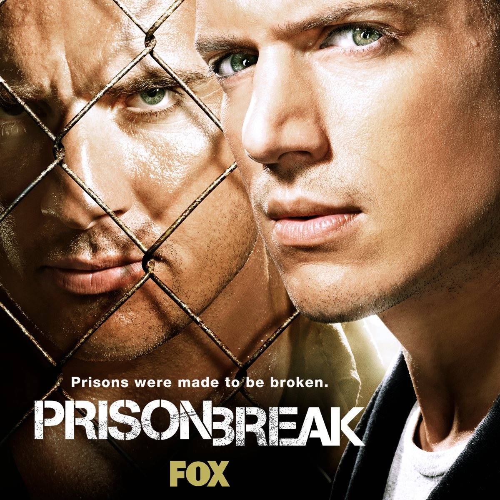
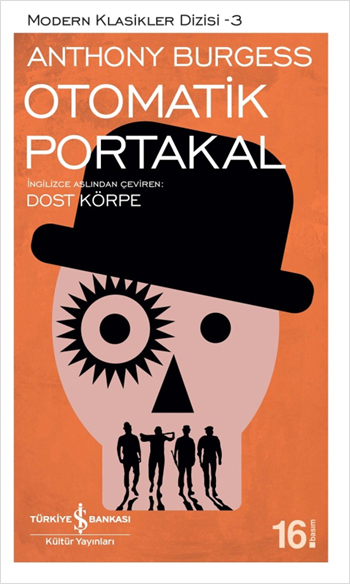
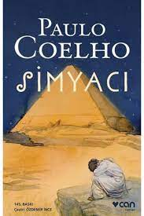

Ali Çolak
Hakkımda
Merhaba ben Ali Çolak. Uşalıyım. Akdeniz Üniversitesi Bilgisayar Mühendisliği 3.sınıf öğrencisiyim.
Web geliştirme ile ilgilenmeyi seviyorum. Önce Frontend eğitimini tamamlayıp daha sonra .Net eğitimini tamamlamayı düşünüyorum.
Buraya Linkedin hesabımı bırakıyorum
Linkedin vermişken github vermemek olmaz
Githubİlgi Alanlarım
-
Filmler
- Yıldızlararası
- Joker
- Özgürlük Yolu
-
Diziler
- Prison Break
- Breaking Bad
- Game Of Thrones
-
Kitaplar
- Otomatik Portakal
- Simyacı
- Şeker Portakalı
Sevdiğim Filmler
Yıldızlararası - IMDB
Teknik bilgisi ve becerisi yüksek olan Cooper, geniş mısır tarlalarında çiftçilik yaparak geçinmektedir; amacı iki çocuğuna güvenli bir hayat sunmaktır.
Onlarla yaşayan Büyükbaba Donald çocuklara göz kulak olurken, henüz 10 yaşındaki kızı Murph şaşırtıcı bir zekaya sahiptir. Geçmişte bıraktığı biliminsanı kariyerini özleyen Cooper'un karşısına bir gün beklenmedik bir teklif çıkar ve ailesinin, dahası insanlığın güvenliği için zorlu bir karar alması gerekir.

Joker - IMDB
Başarısız bir komedyen olan Arthur Fleck'in hayatına odaklanıyor. Toplum tarafından dışlanan bir adam olan Arthur, hayatta yapayalnızdır.
Sürekli bir bağ kurma arayışında olan Arthur, yaşamını taktığı iki maske ile geçirir. Gündüzleri, geçimini sağlamak için palyaço maskesini yüzüne takan Arthur, geceleri ise asla üzerinden silip atamayacağı bir maske takar. Babasız büyüyen Arthur’u en yakın arkadaşı olan annesi Happy adıyla çağırır.
Bu lakap, Arthur’un içindeki acıyı gizlemesine yardımcı olur. Ancak maruz kaldığı zorbalıklar, onun gitgide toluma aykırı bir adam haline gelmesine neden olur. Yavaş yavaş psikolojik olarak tekinsiz sulara yelken açılan Arthur, bir süre sonra kendisini Gotham Şehri’nde suç ve kaosun içinde bulur. Arthur, zamanla kendi kimliğinden uzaklaşıp Joker karakterine bürünür.
Özgürlük Yolu - IMDB
bir metropolden vahşi hayata, kirlilikten saflığa ve temizliğe dönüş hikayesidir. Önemli bir üniversiteden dereceyle mezun olan Christopher aynı zaman başarılı bir atlettir de. Mezuniyet sonrası verilen bir davette ailesine istediği hayatın bu olmadığını, bir şeylerin eksik ve yanlış olduğunu söyler.
Genç adam tüm mal varlığını hayır kurumuna bağışlayıp sahip olduğu her şeyi evinde bırakarak bambaşka bir hayata doğru uzun bir yolculuğa çıkar. Alaska’nın ıssız ormanlarında sona eren bu yolculuk esnasında ve sonrasında Christopher, hayatını kökünden değiştirecek bazı kişilerle tanışarak, hayatın anlamını ve ölümün kaçınılmazlığını en sert haliyle deneyimleyecektir.
Ünlü oyuncu Sean Penn'in yönetmenliğini üstlendiği, iki dalda Oscar'a aday gösterilen filmin başrollerinde Emile Hirsch ve Vince Vaughn bulunuyor...

Sevdiğim Diziler
Prison Break - IMDB
Haksız yere ceza alan kardeşi için hapishanenin krokisini vücuduna dövme yaptırarak hapishaneye girip kardeşini kurtarmaya çalışan bir inşaat mühendisini anlatıyor.
Breaking Bad - IMDB
Kansere yakalanan bir kimya öğretmeni ailesine yüksek miktarda para bırakabilmek için uyuşturucu yapıp satmaya başlıyor. Ancak sonradan kanseri düzeliyor ve artık uyuşturucu işinden çıkamıyor.

Game Of Thrones - IMDB
Krallık dediğin savaşsız olur mu? En güçlü krallığı kurup, huzuru sağlamış olsan bile bu gücü elinde nasıl koruyacaksın? Burada yanlış yapana yer yok, affetmek yok. Kuzey Krallığının hükümdarı Lord Ned Stark, uzun ve zorlu savaşlardan sonra anayurduna dönüp krallığını bütünlük içerisinde tutmayı başarmıştır.
Kral Robert Baratheon ile yıllarca omuz omuza çarpışan ve Baratheon'un kral olmasını sağlayan Ned Stark'ın tek istediği kuzey sınırlarını koruyan krallığında ailesiyle ve halkıyla yaşamaktır.
Fakat suyun öte yanında kendi topraklarından ve krallığından kovulduğunu iddia eden Viserys Targaryen , kız kardeşi Daenerys'i barbar kavimlerin başı Han Drogo'ya vererek, güç birliği planları yapmaktadır.
Tahtını büyük bir iştahla geri isteyen ama kraliyet oyunlarından habersiz olan Viserys'in planları Kral Baratheon'a ulaşır. Savaş alanında büyük cengaver olan ama ülke ve aile yönetiminde aynı başarıyı tutturamayan Baratheon'un tamamen güvenebileceği ve her yanlış hamlesini arkasından toplayacak yeni bir sağ kola ihtiyacı vardır.
Kuzeyin Lordu Ned Stark bu görev için seçilen tek aday isimdir. Kış yaklaşıyor...
Hanedan entrikaları, kapılı kapılar ardında dönen oyunlar, birilerinin kuyusunu kazmak için düşmanın koynuna girmekten çekinmeyen kadınlar, kardeşler arası çekişmeler, dışlanmalar...
Hepsi tek bir hedef için: taht kavgası...

Sevdiğim Kitaplar
Otomatik Portakal - GOODREADS
Tüm hayvanların en zekisi, iyiliğin ne demek olduğunu bilen insanoğluna bir baskı yöntemi uygulayarak onu otomatik işleyen bir makine haline getirenlere kılıç kadar keskin olan kalemimle saldırmaktan başka hiçbir şey yapamıyorum…” Karabasan gibi bir gelecek atmosferi… Geceleyin sokakları terörize eden, yaşamları şiddet üzerine kurulu gençler ve bu hikâyenin anti-kahramanı Alex... Yayımlandığı günden bu yana “kült roman” özelliğini kaybetmeyen Otomatik Portakal’ın 15 yaşındaki kahramanı, “iyi ya da kötü nedir?”, “İnsan özgür iradesiyle kaderini seçebilir mi?” gibi soruların yanıtlarını kurcalarken, şiddet dolu sahnelere Beethoven’ın, Mozart’ın müziği eşlik ediyor; Alex ve “çete kardeşleri” Pete, Georgie ve Aptalof, yarattıkları yepyeni dilin kelimelerini okurun zihnine kazıyorlar.
Simyacı - GOODREADS
Simyacı, Santiago adındaki Endülüslü bir çobanın İspanya’dan başlayıp Mısır’da sona eren yolculuğunu konu ediniyor. Gördüğü bir rüya üzerine sahip olduğu her şeyi ardında bırakan Santiago’nun bu serüveni, onu düşlerine kavuşturduğu kadar hayatın hakikatine de ulaştırıyor. Simyacı’nın sayfalarını çevirdikçe siz de Santiago’yla birlikte kendi içinize doğru bir yolculuğa çıkacaksınız.
Şeker Portakalı - GOODREADS
Brezilya edebiyatının klasiklerinden Şeker Portakalı, José Mauro de Vasconcelos’un başyapıtı kabul edilir. Yetişkinler dünyasının sınırlamalarına hayal gücüyle meydan okuyan Zezé’nin yoksulluk, acı ve ümit dolu hikâyesi yazarın çocukluğundan derin izler taşır.
Beş yaşındaki Zezé hemen her şeyi tek başına öğrenir: sadece bilye oynamayı ve arabalara asılmayı değil, okumayı ve sokak şarkıcılarının ezgilerini de. En yakın sırdaşıysa, anlattıklarına kulak veren ve Minguinho adını verdiği bir şeker portakalı fidanıdır…